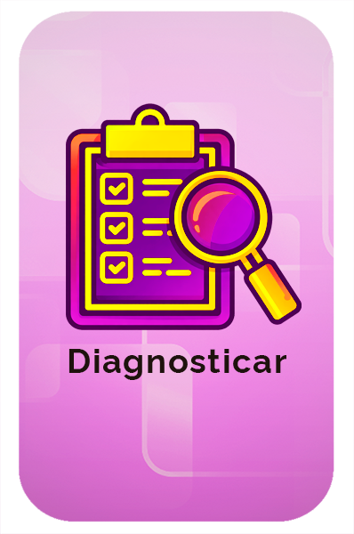
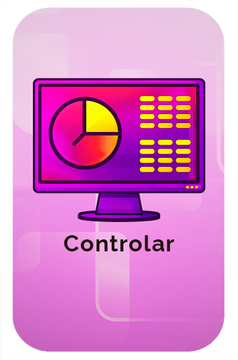
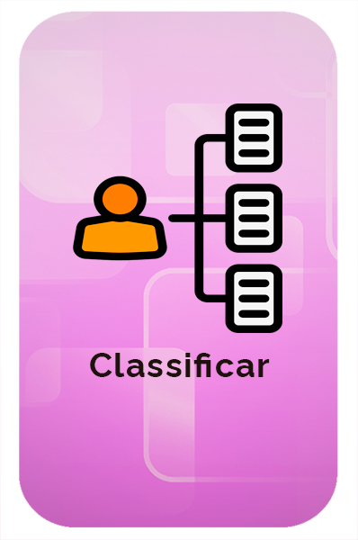
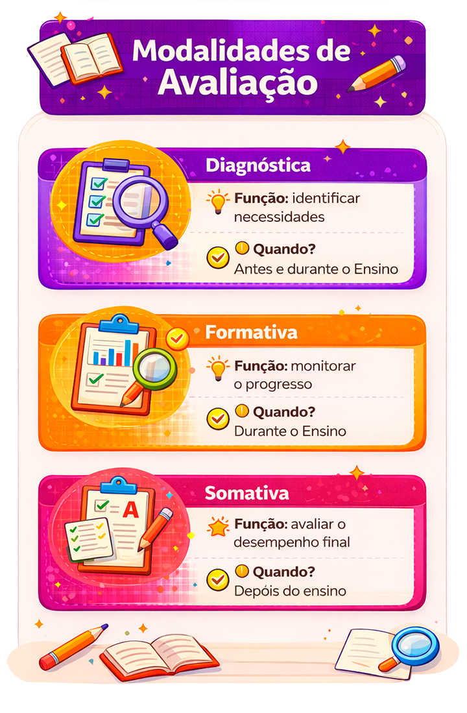
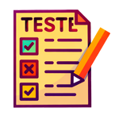
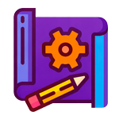
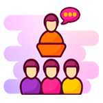
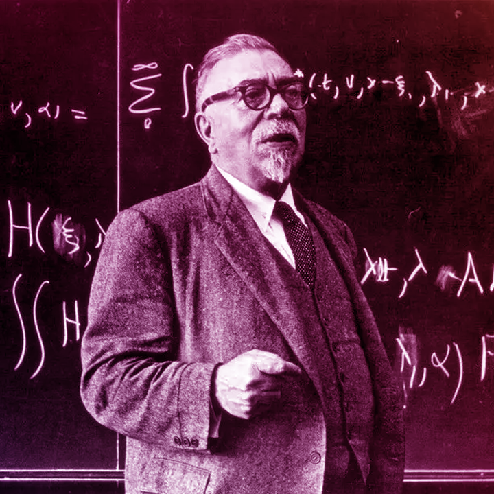

Avaliação e feedbacks no EaD
Objetivos de aprendizagem
Ao final desta aula você poderá:

Compreender o conceito de avaliação da aprendizagem e as modalidades aplicadas em EaD.
Reconhecer a importância e os tipos de Feedbacks na aprendizagem em EaD.
Conceito e modalidades de avaliação no EaD
Quando questionamos gestores, professores e estudantes sobre sua concepção ou entendimento de avaliação, a maioria deles associa o termo a notas, testes, provas, exames, aprovação, reprovação e outros conceitos relacionados. Essas ideias refletem a forma como, no dia a dia, compreendemos a avaliação no contexto do ensino presencial.
Tradicionalmente, no meio educacional “avaliar” significa utilizar instrumentos e ferramentas para mensurar o conhecimento dos estudantes de um curso, verificando o grau de conformidade com alguns objetivos traçados em um determinado espaço de tempo.
Sendo assim, estamos diante de um imenso desafio: como avaliar os alunos na modalidade a distância e ainda romper com a cultura tradicional que permeia o processo avaliativo?
Na modalidade de EaD, a avaliação ganha configurações diferentes, tendo em vista a distância física entre educador e educando. Por esse motivo, avaliar no ensino online requer constante interação entre os sujeitos envolvidos no processo, para que assim os indivíduos sejam integralmente formados.
A avaliação da aprendizagem em educação a distância (EaD) deve estar vinculada a um processo contínuo de acompanhamento dos estudantes. O objetivo é que eles possam desenvolver competências, habilidades e atitudes, e que consigam alcançar os objetivos propostos no Projeto Pedagógico do Curso.
Modalidades
de avaliação:
diagnóstica, formativa e
somativa
Para Haydt (2008), a avaliação apresenta basicamente três funções:


Relacionadas a essas três funções, existem três modalidades de avaliação.
Agora, vamos entender como esse processo acontece na prática. A seguir, apresentamos uma representação do processo avaliativo, que pode ser aplicado tanto no ensino presencial quanto na educação a distância.

Avaliação diagnóstica
A avaliação diagnóstica é aquela realizada no início de uma série ou conteúdo para verificar os conhecimentos de cada estudante e se ele possui ou não conhecimentos e habilidades imprescindíveis para as novas aprendizagens. Ela subsidia o (re)planejamento e a organização de sequências didáticas e de ações e permite estabelecer o nível de necessidades iniciais para a realização de um planejamento adequado, que deverá ser discutido e constantemente analisado.
A avaliação diagnóstica é importante porque permite que o professor identifique dificuldades de aprendizagem e adapte o plano pedagógico. Com isso, o estudante pode ter um aprendizado mais eficaz e atingir novos patamares de competência.
A avaliação diagnóstica em educação a distância (EaD) pode ser feita por meio de:
Nessa perspectiva, tais instrumentos avaliativos têm por objetivo:
- Obter informações sobre as necessidades e possibilidades de aprendizagem dos estudantes sobre o conteúdo.
- Obter informações sobre as características individuais dos alunos.
- Verificar suas expectativas sobre o curso.
- Conhecer as razões para se matricularem no curso.
- Verificar as experiências e os conhecimentos prévios adquiridos nos assuntos que serão tratados no curso.
- Buscar informações em relação à fluência no uso do computador e da internet.
- Verificar o conhecimento e a experiência com a plataforma por meio da qual o curso será desenvolvido.
- Obter os dados sobre as características sociodemográficas dos alunos.
- Obter informações sobre o nível de escolaridade ou acadêmico dos estudantes, entre outros.
Avaliação formativa
A avaliação formativa é um processo contínuo que fornece feedback aos alunos para que eles possam melhorar o aprendizado.
Esse tipo de avaliação tem caráter essencialmente orientador, pois direciona tanto o percurso de aprendizagem do estudante quanto as estratégias pedagógicas adotadas pelo professor. Além disso, fornece dados para criar condições de melhoria do ensino, visando à aprendizagem, pois o processo não está finalizado.
A avaliação formativa é a mais significativa em cursos ofertados na modalidade a distância, uma vez que possibilita o acompanhamento e a análise do aprendizado do aluno, mediando seu percurso formativo em busca do conhecimento.
A avaliação formativa possui as características a seguir, entre outras:
- Tem como objetivo possibilitar que o professor compreenda como o estudante elabora e constrói seu próprio conhecimento.
- Pode ser feita com base em vários instrumentos, conforme as aulas são ministradas.
- Os registros não podem ser exclusivamente quantitativos, com notas ou mesmo conceitos, mas em forma de relatório e anotações que definirão estratégias posteriores.
- Não tem como objetivo principal a definição de um conceito ou nota, mas o desenvolvimento do aluno verificado durante o processo.
- Prevê que os estudantes têm ritmos e processos de aquisição de conhecimento diferentes.
- Propõe a necessidade de investigação do conhecimento prévio do estudante.
- Permite a diversificação de formas de agrupamento dos estudantes.
A avaliação formativa pode ser realizada por meio de:

Testes
Projetosem grupo

Discussões emsala de aula
Avaliação somativa
A avaliação somativa tem por objetivo avaliar o desempenho dos estudantes ao final de um período de ensino. O principal aspecto enfatizado nesse tipo de avaliação é classificá-los de acordo com seu nível de aproveitamento.
Como podemos utilizar a avaliação somativa em educação a distância, não focando exclusivamente em sua função classificatória e de mensuração, buscando utilizá-la para desenvolver habilidades cognitivas mais complexas nos alunos?
Para (re)significar a utilização da avaliação somativa, seja no ensino presencial ou a distância, é preciso que o professor considere a avaliação em seu verdadeiro sentido, ou seja, o de fazer parte do processo de ensino e aprendizagem, porque não podemos propiciar a aprendizagem se não estivermos constantemente avaliando as condições de interação com os estudantes e a concepção de ensinar e aprender que permeia a organização da prática pedagógica, especialmente na educação a distância.
Concebendo a avaliação como parte integrante do processo de ensinar e de aprender, a avaliação deixa de ser um momento final para se tornar uma busca visando à compreensão do educando e oportunizando a construção do conhecimento, levando-o a desenvolver estruturas cognitivas mais complexas durante seu percurso formativo.
No entanto, essas estruturas devem ser desenvolvidas com a intervenção do professor, que, a partir da mediação, estimula e propicia condições para que o estudante elabore ou aperfeiçoe seu conhecimento.
Exemplos de avaliação somativa em educação a distância (EaD) incluem:
- Questionários.
- Avaliações bimestrais.
- Avaliações semestrais.
- Avaliação final.
- Trabalhos finais.
- Fóruns de discussão.
- Produção de textos.
- Lista de exercícios.
Para elaborar uma avaliação para um curso autoinstrucional no ensino a distância (EaD), é preciso considerar os objetivos educacionais do curso e as estratégias de avaliação recomendadas no Projeto pedagógico do curso.
Algumas dicas para elaborar uma avaliação em EaD são:
- Considerar o ciclo de aprendizagem do estudante.
- Priorizar avaliações formativas e diagnósticas.
- Dividir as entregas avaliativas em etapas.
- Diversificar os instrumentos de avaliação.
- Considerar as diferentes formas de construção do conhecimento.
- Acompanhar o progresso dos estudantes.
- Identificar dificuldades de aprendizagem e saná-las.
- Estimular os estudantes a serem ativos na construção do conhecimento.
A importância dos
feedbacks
nas avaliações
As avaliações no processo educativo são de suma importância, pois contribuem para que o professor consiga ter um diagnóstico da aprendizagem do estudante. Nesse sentido, a resposta que o aluno dá ao professor é uma percepção daquilo que ele aprendeu ou aprenderá em sala de aula ou em outros ambientes de aprendizagem.
No processo de aprendizagem da educação à distância, é incluído o feedback, termo utilizado para designar uma ação do estudante ao expressar sua motivação no momento de aprendizagem ou algo que venha a incomodar e que esteja impedindo uma boa interação e percepção dos conteúdos aprendidos.
Segundo Flores (2009), todos que emitem uma mensagem sentem necessidade de feedback, seja acerca dos aspectos positivos ou da necessidade de melhorias. Nos modelos de educação a distância (EaD) que utilizam a internet como tecnologia principal ou de apoio, o professor que está no Ambiente Virtual de Aprendizagem diretamente em contato com os estudantes, pode utilizar o feedback para responder dúvidas, avaliar e desenvolver outras atividades inerentes à docência.
De acordo com Flores (2009), o feedback é uma forma de comunicação entre as pessoas envolvidas nesse processo educacional, sendo um elemento essencial e transformador. Sendo assim, os elementos básicos da comunicação são: “a realidade ou situação em que ela se realiza e sobre a qual tem um efeito transformador; os interlocutores que dela participam; os conteúdos ou mensagens que elas compartilham; os signos que elas utilizam para representá-los; os meios que empregam para transmiti-lo.”
O feedback começou a ser utilizado na década de 1940 pelo matemático estadunidense Norbert Wiener para informar sobre os processos eletrônicos em linguagem militar e, desde então, se tornou um mecanismo de grande importância nos espaços de trabalho, bem como para o aprimoramento da formação acadêmica, pois o retorno dado ao estudante pode resultar positivamente em seu aprendizado (Archer; Crispim; Cruz, 2016). Segundo Padilha (2019), feedback é uma palavra inglesa que significa “realimentar” ou “dar resposta” a um determinado pedido ou acontecimento.

Reiterando, o feedback se constitui em um retorno dado pelo professor ao estudante no intuito de estabelecer não apenas uma comunicação, mas de contribuir para o melhoramento do desempenho do acadêmico durante seu processo de estudo e isso envolve, também, na qualidade de sua formação profissional. Em alguns contextos pode ser apresentado um retorno que contém uma mensagem positiva, sendo denominado de feedback positivo ou uma mensagem de teor negativo; nesse caso, considerado como feedback negativo. (Padilha, 2019).
Em educação à distância o feedback deve ser frequente, informando ao estudante sobre seu desempenho. Esse retorno se configura em algo indispensável no processo de avaliação a distância. Quando é utilizado de forma inadequada compromete o desempenho do estudante, que obterá um desempenho limitado, afetando sua atuação enquanto profissional. Desse modo, o feedback é importante porque contribui para identificar ao estudante como está seu desempenho em um curso ou disciplina.
O bom desempenho do estudante estará relacionado ao tipo de informação e ao momento em que o feedback lhe será apresentado. O retorno pode ser imediato, por exemplo, assim que o estudante tenha realizado uma avaliação — o que chamamos de feedback imediato. Não necessariamente o retorno precisa ser imediato, podendo ser enviado após alguns dias ou semanas.
Nas páginas seguintes veremos alguns tipos de feedback.
Tipos de feedback
No contexto educacional, o feedback é um recurso fundamental para orientar o estudante em seu processo de aprendizagem. Para que esse retorno cumpra sua função formativa, é essencial compreender quais tipos de feedback são adequados e quais devem ser evitados, considerando-se suas características e impactos no desenvolvimento do estudante.
É importante que o estudante compreenda as observações do feedback. Para que isso ocorra ele deve ser claro, objetivo e de caráter incentivador a fim de que possam ser feitas as correções solicitadas. Outro fator importante a ser ponderado é a disponibilidade do estudante em realizar as correções. Caso contrário, o feedback não terá resultado satisfatório.
Vale ressaltar que, em educação a distância, o feedback se faz necessário, pois se trata de um recurso que possibilita a interação entre tutor/professor e estudante. No processo de avaliação a distância não é suficiente apenas o registro de uma avaliação. Por isso, o feedback se torna indispensável para uma finalização satisfatória do processo avaliativo, pois, enquanto futuro profissional, o estudante precisa saber como e em que poderá melhorar, de modo que o “feedback é um meio de aperfeiçoamento do desempenho” (Archer; Crispim; Cruz, 2016).
Conforme Bianca Consoni, o feedback jamais pode ser expresso como uma opinião. Caso sejam utilizadas expressões como “não gostei” e “não é assim”, sempre deverão ser esclarecidas. O professor ou tutor precisa informar ao acadêmico os motivos dessas negativas. Por exemplo: “não gostei disso porque...” ou “não é assim, pois...” e assim sucessivamente. O emissor da mensagem deve esclarecer ao receptor em que ele errou e orientá-lo sobre qual é a melhor forma a ser empregada. Dessa forma, é importante que a mensagem promova uma comunicação esclarecedora e construtiva para o estudante. (Consoni, 2010).
Como o feedback precisa de objetividade e clareza, o tutor precisa sempre estar atento à sua escrita. Textos longos e rebuscados não são aconselháveis, o ideal é que o estudante possa receber uma mensagem com frases curtas e de fácil compreensão (Archer; Crispim; Cruz, 2016).
O feedback deve ser constante, pois o desempenho positivo do ensino EaD está interligado à dinâmica dos retornos entre professor e estudante. Sendo assim, cabe ao emissor o papel de transmitir mensagens de orientação. Para isso, deve-se enviar ao acadêmico um feedback orientador, uma vez que não basta apenas um texto claro e objetivo.
Os cursos autoinstrucionais muitas vezes incluem questionários, exercícios práticos e avaliações para verificar a compreensão do conteúdo. O feedback é imediato, pois as atividades possuem correção automatizada.
Você
chegou ao final da
quarta aula do Módulo
2
Nesta aula você aprendeu que a avaliação de aprendizagem em Educação a Distância (EaD) é uma ferramenta pedagógica que tem como função mensurar o desempenho e o progresso dos estudantes, fornecer feedback e ajudar os profissionais a adaptarem o conteúdo do curso às necessidades dos participantes.
A avaliação de aprendizagem na EaD ter papel semelhante ao de cursos presenciais, podendo ter configurações diferentes devido à distância entre o professor e o estudante. O processo deve ser contínuo e interativo para que os alunos sejam formados de forma integral.
Conheceu as modalidades de avaliação diagnóstica, formativa e somativa que podem ser aplicadas no ensino a distância (EaD). Cada uma delas tem uma função específica e é aplicada em um momento diferente do processo de ensino-aprendizagem.
Conheceu também os instrumentos que podem ser utilizados para avaliar o aprendizado dos alunos em cada uma das modalidades no ensino a distância (EaD).
Além disso, é possível utilizar ferramentas tecnológicas para corrigir automaticamente as atividades e dar feedback aos estudantes.
Aprendeu também que o feedback é um retorno dado pelo professor para que os estudantes possam identificar seus pontos fortes e fracos e redirecionar o processo de aprendizagem.
Conferindo a aprendizagem
Questão
1
Objetivo: Compreender o papel e as características da avaliação formativa em cursos autoinstrucionais e mediados por tecnologias.
Qual das alternativas a seguir melhor representa a avaliação formativa no contexto da Educação a Distância?
Questão
2
Objetivo: Reconhecer a importância e os tipos de Feedbacks na aprendizagem em EaD.
Qual das alternativas a seguir apresenta corretamente um tipo de feedback adequado ao contexto educacional e voltado à formação do estudante?